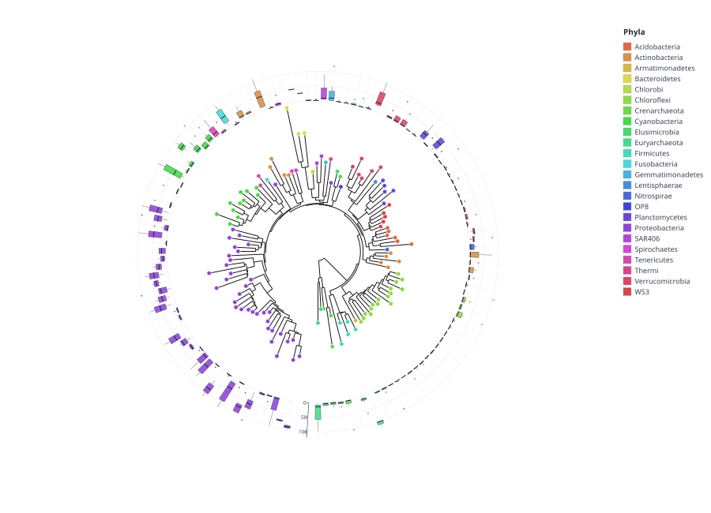
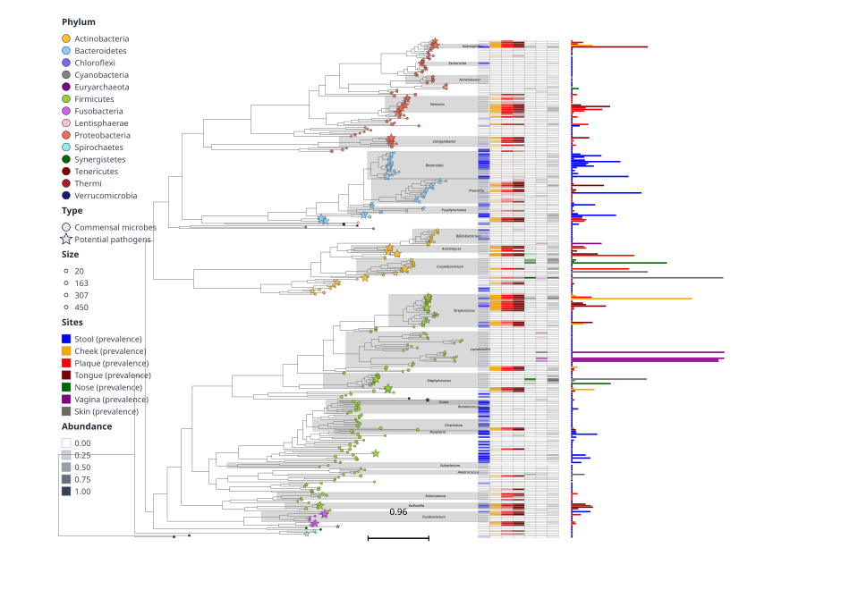
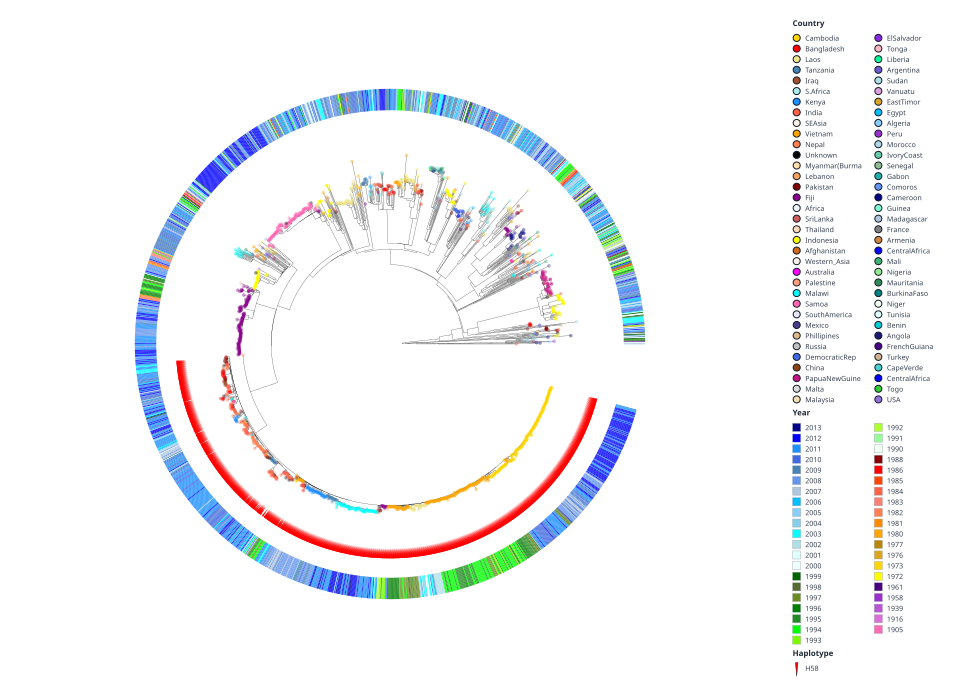

10. ggtreeExtra for Presenting Data on Circular Layout
While geom_facet() excels in side-by-side rectangular panels, radial metagenomics, microbiome, and population-genomics datasets frequently arrange external data layers around circular or fan trees using geom_fruit().
10.1 Introduction
The ggtreeExtra grammar—geom_fruit() alongside geom_star(), new_scale_fill(), and new_scale_colour()—aligns boxplots, symbol rings, heatmaps, and barplots radially onto circular or rectangular phylogenies using a unified tidy API.
10.2 Aligning Graphs to the Tree Based on a Tree Structure
Pair ggtree(..., layout='fan', open_angle=10) and rotate_tree(..., -90) with geom_fruit(data=melt_simple, geom=geom_boxplot, mapping=aes(y='OTU', x='val', group='label', fill='Phylum')) plus axis_params and grid_params to project abundance distributions radially per OTU.

▶ Show / Hide Python Code read_treeread_tableggtreeaes
from ggtree import (
system_file, read_tree, read_table, ggtree, aes, geom_tippoint,
rotate_tree, geom_fruit, geom_boxplot, scale_fill_discrete,
guide_legend, theme,
)
tree = read_tree(system_file("extdata", "TDbook", "tree_GlobalPatterns_order.nwk"))
tax = read_table(system_file("extdata", "TDbook", "df_GlobalPatterns_tax.tsv"))
melt_simple = read_table(system_file("extdata", "TDbook", "df_GlobalPatterns_melt.tsv"))
tax["OTU"] = [str(v) for v in tax["OTU"]]
melt_simple["OTU"] = [str(v) for v in melt_simple["OTU"]]
p = (
ggtree(tree, layout="fan", open_angle=10)
% tax
+ geom_tippoint(mapping=aes(color="Phylum"), size=1.5, show_legend=False)
)
p = rotate_tree(p, -90)
p = (
p
+ geom_fruit(
data=melt_simple,
geom=geom_boxplot,
mapping=aes(y="OTU", x="val", group="label", fill="Phylum"),
size=0.2,
outlier_size=0.5,
outlier_stroke=0.08,
outlier_shape=21,
axis_params={"axis": "x", "text_size": 1.8, "hjust": 1, "vjust": 0.5, "nbreak": 3},
grid_params={},
)
+ scale_fill_discrete(
name="Phyla",
guide=guide_legend(keywidth=0.8, keyheight=0.8, ncol=1),
)
+ theme(legend_title_size=9, legend_text_size=7)
)
p
10.3 Aligning Multiple Graphs to the Tree for Multi-dimensional Data
Chain clade highlights (geom_hilight), curved italic clade labels (geom_cladelab), tip star glyphs (geom_star), body-site tile rings (geom_fruit(geom=geom_tile, aes(alpha=...))), and outer prevalence bars (geom_fruit(geom=geom_bar))—and switch seamlessly between circular and rectangular coordinates using layout_rectangular().

▶ Show / Hide Python Code read_treeread_tablefactornodeid
import re
from ggtree import (
system_file, read_tree, read_table, factor, nodeid, DataFrame,
ggtree, aes, geom_hilight, geom_cladelab, geom_star,
scale_fill_manual, scale_starshape_manual, scale_size_continuous,
new_scale_fill, geom_fruit, geom_tile, geom_bar,
scale_alpha_continuous, geom_treescale, guide_legend, theme,
)
tree = read_tree(system_file("extdata", "TDbook", "tree_hmptree.nwk"))
dat1 = read_table(system_file("extdata", "TDbook", "df_tippoint.tsv"))
dat2 = read_table(system_file("extdata", "TDbook", "df_ring_heatmap.tsv"))
dat3 = read_table(system_file("extdata", "TDbook", "df_barplot_attr.tsv"))
site_levels = [
"Stool (prevalence)", "Cheek (prevalence)", "Plaque (prevalence)",
"Tongue (prevalence)", "Nose (prevalence)", "Vagina (prevalence)",
"Skin (prevalence)",
]
dat2["Sites"] = factor(dat2["Sites"], levels=site_levels)
dat3["Sites"] = factor(dat3["Sites"], levels=site_levels)
long_labs = [lb for lb in (tree.node_label or []) if lb and len(lb) > 4]
nodeids = nodeid(tree, long_labs)
nodelab = [re.sub(r"[.0-9]", "", lb) for lb in long_labs]
poslist = [
1.6, 1.4, 1.6, 0.8, 0.1, 0.25, 1.6, 1.6, 1.2, 0.4,
1.2, 1.8, 0.3, 0.8, 0.4, 0.3, 0.4, 0.4, 0.4, 0.6,
0.3, 0.4, 0.3,
]
nodedf = DataFrame({"node": nodeids})
labdf = DataFrame({"node": nodeids, "label": nodelab, "pos": poslist})
p = (
ggtree(tree, layout="fan", size=0.15, open_angle=5)
+ geom_hilight(
data=nodedf, mapping=aes(node="node"),
extendto=6.8, alpha=0.3, fill="grey", color="grey50", size=0.05,
)
+ geom_cladelab(
data=labdf, mapping=aes(node="node", label="label", offset_text="pos"),
hjust=0.5, angle="auto", barsize=0.0, horizontal=False,
fontsize=1.4, fontface="italic",
)
)
p = (
p % dat1
+ geom_star(
mapping=aes(fill="Phylum", starshape="Type", size="Size"),
starstroke=0.1,
)
+ scale_fill_manual(
values=[
"#FFC125", "#87CEFA", "#7B68EE", "#808080", "#800080",
"#9ACD32", "#D15FEE", "#FFC0CB", "#EE6A50", "#8DEEEE",
"#006400", "#800000", "#B0171F", "#191970",
],
guide=guide_legend(
keywidth=0.5, keyheight=0.5, order=1,
override_aes={"starshape": 15},
),
na_translate=False,
)
+ scale_starshape_manual(
values=[15, 1],
guide=guide_legend(keywidth=0.5, keyheight=0.5, order=2),
na_translate=False,
)
+ scale_size_continuous(
range=(1.0, 2.5),
guide=guide_legend(
keywidth=0.5, keyheight=0.5, order=3,
override_aes={"starshape": 15},
),
)
)
p = (
p
+ new_scale_fill()
+ geom_fruit(
data=dat2, geom=geom_tile,
mapping=aes(y="ID", x="Sites", alpha="Abundance", fill="Sites"),
color="grey50", offset=0.04, size=0.02,
)
+ scale_alpha_continuous(
range=(0.0, 1.0),
guide=guide_legend(keywidth=0.3, keyheight=0.3, order=5),
)
+ geom_fruit(
data=dat3, geom=geom_bar,
mapping=aes(y="ID", x="HigherAbundance", fill="Sites"),
pwidth=0.38, orientation="y", stat="identity",
)
+ scale_fill_manual(
values=["#0000FF", "#FFA500", "#FF0000", "#800000", "#006400", "#800080", "#696969"],
guide=guide_legend(keywidth=0.3, keyheight=0.3, order=4),
)
+ geom_treescale(fontsize=2.0, linesize=0.3, x=4.9, y=0.1)
+ theme(legend_position=(0.93, 0.5), legend_title_size=6.5, legend_text_size=4.5)
)
p

▶ Show / Hide Python Code layout_rectangulargeom_fruitgeom_tilegeom_bar
import re
from ggtree import (
system_file, read_tree, read_table, factor, nodeid, DataFrame,
ggtree, aes, geom_hilight, geom_cladelab, geom_star,
scale_fill_manual, scale_starshape_manual, scale_size_continuous,
new_scale_fill, geom_fruit, geom_tile, geom_bar,
scale_alpha_continuous, geom_treescale, layout_rectangular,
guide_legend, theme,
)
tree = read_tree(system_file("extdata", "TDbook", "tree_hmptree.nwk"))
dat1 = read_table(system_file("extdata", "TDbook", "df_tippoint.tsv"))
dat2 = read_table(system_file("extdata", "TDbook", "df_ring_heatmap.tsv"))
dat3 = read_table(system_file("extdata", "TDbook", "df_barplot_attr.tsv"))
site_levels = [
"Stool (prevalence)", "Cheek (prevalence)", "Plaque (prevalence)",
"Tongue (prevalence)", "Nose (prevalence)", "Vagina (prevalence)",
"Skin (prevalence)",
]
dat2["Sites"] = factor(dat2["Sites"], levels=site_levels)
dat3["Sites"] = factor(dat3["Sites"], levels=site_levels)
long_labs = [lb for lb in (tree.node_label or []) if lb and len(lb) > 4]
nodeids = nodeid(tree, long_labs)
nodelab = [re.sub(r"[.0-9]", "", lb) for lb in long_labs]
poslist = [
1.6, 1.4, 1.6, 0.8, 0.1, 0.25, 1.6, 1.6, 1.2, 0.4,
1.2, 1.8, 0.3, 0.8, 0.4, 0.3, 0.4, 0.4, 0.4, 0.6,
0.3, 0.4, 0.3,
]
nodedf = DataFrame({"node": nodeids})
labdf = DataFrame({"node": nodeids, "label": nodelab, "pos": poslist})
p = (
ggtree(tree, layout="fan", size=0.15, open_angle=5)
+ geom_hilight(
data=nodedf, mapping=aes(node="node"),
extendto=6.8, alpha=0.3, fill="grey", color="grey50", size=0.05,
)
+ geom_cladelab(
data=labdf, mapping=aes(node="node", label="label", offset_text="pos"),
hjust=0.5, angle="auto", barsize=0.0, horizontal=False,
fontsize=1.4, fontface="italic",
)
)
p = (
p % dat1
+ geom_star(mapping=aes(fill="Phylum", starshape="Type", size="Size"), starstroke=0.1)
+ scale_fill_manual(
values=[
"#FFC125", "#87CEFA", "#7B68EE", "#808080", "#800080",
"#9ACD32", "#D15FEE", "#FFC0CB", "#EE6A50", "#8DEEEE",
"#006400", "#800000", "#B0171F", "#191970",
],
guide=guide_legend(order=1, override_aes={"starshape": 15}),
na_translate=False,
)
+ scale_starshape_manual(values=[15, 1], guide=guide_legend(order=2), na_translate=False)
+ scale_size_continuous(range=(1.0, 2.5), guide=guide_legend(order=3, override_aes={"starshape": 15}))
+ new_scale_fill()
+ geom_fruit(
data=dat2, geom=geom_tile,
mapping=aes(y="ID", x="Sites", alpha="Abundance", fill="Sites"),
color="grey50", offset=0.04, size=0.02,
)
+ scale_alpha_continuous(range=(0.0, 1.0), guide=guide_legend(order=5))
+ geom_fruit(
data=dat3, geom=geom_bar,
mapping=aes(y="ID", x="HigherAbundance", fill="Sites"),
pwidth=0.38, orientation="y", stat="identity",
)
+ scale_fill_manual(
values=["#0000FF", "#FFA500", "#FF0000", "#800000", "#006400", "#800080", "#696969"],
guide=guide_legend(order=4),
)
+ geom_treescale(fontsize=2.0, linesize=0.3, x=4.9, y=0.1)
)
p + layout_rectangular() + theme(legend_position=(0.05, 0.7))
10.4 Examples for Population Genetics
Combine lineage coloring via groupOTU(), dotted country tip connectors via geom_tiplab(align=True), antifungal susceptibility heatmap rings, and point-mutation or haplotype spike rings (geom_star(starshape=26)) on large population cohorts such as Candida auris and 1,832 S. Typhi isolates.

▶ Show / Hide Python Code read_treeread_tablegroupOTUfactor
from ggtree import (
system_file, read_tree, read_table, groupOTU, factor, DataFrame,
ggtree, aes, geom_tippoint, geom_tiplab, scale_colour_manual,
new_scale_colour, new_scale_fill, geom_fruit, geom_tile, geom_star,
scale_fill_manual, scale_starshape_manual, guide_legend, theme,
)
dat = read_table(system_file("extdata", "TDbook", "df_Candidaauris_data.tsv"))
tr = read_tree(system_file("extdata", "TDbook", "tree_Candidaauris.nwk"))
countries = [
"Canada", "United States", "Colombia", "Panama", "Venezuela",
"France", "Germany", "Spain", "UK", "India", "Israel", "Pakistan",
"Saudi Arabia", "United Arab Emirates", "Kenya", "South Africa",
"Japan", "South Korea", "Australia",
]
c_map = {str(c): str(col) for c, col in zip(dat["COUNTRY"], dat["COUNTRY__colour"]) if c}
country_colors = [c_map[c] for c in countries]
dat1 = DataFrame({
"ID": dat["ID"],
"COUNTRY": factor(dat["COUNTRY"], levels=countries),
})
af_levels = ["FCZ", "AMB", "MCF"]
d2_id, d2_af, d2_tp = [], [], []
for af in af_levels:
for tid, raw in zip(dat["ID"], dat[af]):
d2_id.append(tid)
d2_af.append(af)
d2_tp.append("Susceptible" if (raw is None or "Not_" in str(raw)) else f"{af} {raw}")
dat2 = DataFrame({
"ID": d2_id,
"Antifungal": factor(d2_af, levels=af_levels),
"type": factor(d2_tp, levels=["FCZ Resistant", "AMB Resistant", "MCF Resistant", "Susceptible"]),
})
d3_id, d3_pt, d3_mut = [], [], []
for pt in ["ERG11", "FKS1"]:
for tid, raw in zip(dat["ID"], dat[pt]):
d3_id.append(tid)
d3_pt.append(pt)
d3_mut.append(None if (raw is None or "WT" in str(raw)) else f"{pt} {raw}")
dat3 = DataFrame({
"ID": d3_id,
"point": factor(d3_pt, levels=["ERG11", "FKS1"]),
"mutation": factor(d3_mut, levels=["ERG11 Y132F", "ERG11 K143R", "ERG11 F126L", "FKS1 S639Y/P/F"]),
})
clades = {}
for tid, cl in zip(dat["ID"], dat["CLADE"]):
if cl:
clades.setdefault(str(cl), []).append(str(tid))
tr = groupOTU(tr, clades, "Clade")
p = (
ggtree(tr, layout="fan", open_angle=15, size=0.2, mapping=aes(colour="Clade"))
+ scale_colour_manual(
name="Clade",
values=["black", "#69B920", "#9C2E88", "#F74B00", "#60C3DB"],
labels=["", "I", "II", "III", "IV"],
guide=guide_legend(
keywidth=0.5, keyheight=0.5, order=1,
override_aes={"linetype": {"0": None, "Clade1": 1, "Clade2": 1, "Clade3": 1, "Clade4": 1}},
),
)
+ new_scale_colour()
)
p1 = (
p % dat1
+ geom_tippoint(aes(colour="COUNTRY"), alpha=0.0)
+ geom_tiplab(aes(colour="COUNTRY"), align=True, linetype=3, size=1.0, linesize=0.2, show_legend=False)
+ scale_colour_manual(
name="Country labels",
values=country_colors,
guide=guide_legend(keywidth=0.5, keyheight=0.5, order=2, override_aes={"size": 2, "alpha": 1}),
)
)
p2 = (
p1
+ geom_fruit(
data=dat2, geom=geom_tile,
mapping=aes(x="Antifungal", y="ID", fill="type"),
width=0.1, color="white", pwidth=0.1, offset=0.15,
)
+ scale_fill_manual(
name="Antifungal susceptibility",
values=["#595959", "#B30000", "#020099", "#E6E6E6"],
na_translate=False,
guide=guide_legend(keywidth=0.5, keyheight=0.5, order=3),
)
+ new_scale_fill()
)
p3 = (
p2
+ geom_fruit(
data=dat3, geom=geom_star,
mapping=aes(x="mutation", y="ID", fill="mutation", starshape="point"),
size=1.0, starstroke=0.0, pwidth=0.1, inherit_aes=False,
grid_params={"linetype": 3, "size": 0.2},
)
+ scale_fill_manual(
name="Point mutations",
values=["#329901", "#0600FF", "#FF0100", "#9900CC"],
guide=guide_legend(
keywidth=0.5, keyheight=0.5, order=4,
override_aes={
"starshape": {
"ERG11 Y132F": 15,
"ERG11 K143R": 15,
"ERG11 F126L": 15,
"FKS1 S639Y/P/F": 1,
},
"size": 2,
},
),
na_translate=False,
)
+ scale_starshape_manual(values=[15, 1], guide="none")
+ theme(legend_title_size=7, legend_text_size=5.5)
)
p3

▶ Show / Hide Python Code read_treeread_tablefactorgeom_tippoint
from ggtree import (
system_file, read_tree, read_table, factor, DataFrame,
ggtree, aes, geom_tippoint, scale_colour_manual, geom_fruit,
geom_star, geom_tile, scale_fill_manual, new_scale_fill,
guide_legend, theme,
)
tr = read_tree(system_file("extdata", "TDbook", "tree_NJIDqgsS.nwk"))
metada = read_table(system_file("extdata", "TDbook", "df_NJIDqgsS.tsv"))
country_map = {}
for c, col in zip(metada["country"], metada["country__colour"]):
if c is not None and str(c) not in country_map:
country_map[str(c)] = str(col)
year_pairs = sorted(
{(int(y), str(col)) for y, col in zip(metada["year"], metada["year__colour"]) if y is not None},
key=lambda kv: kv[0],
reverse=True,
)
metadata = DataFrame({
"id": metada["id"],
"country": factor(metada["country"], levels=list(country_map.keys())),
"year": factor([str(y) if y is not None else None for y in metada["year"]], levels=[str(y) for y, _ in year_pairs]),
"haplotype": [str(h) if (h is not None and len(str(h)) > 0) else None for h in metada["haplotype"]],
})
p = (
ggtree(tr, layout="fan", open_angle=15, size=0.1)
% metadata
+ geom_tippoint(mapping=aes(colour="country"), size=1.5, stroke=0.0, alpha=0.4)
+ scale_colour_manual(
name="Country",
values=list(country_map.values()),
guide=guide_legend(
keywidth=0.3, keyheight=0.3, ncol=2,
override_aes={"size": 2, "alpha": 1}, order=1,
),
)
+ geom_fruit(
geom=geom_star,
mapping=aes(fill="haplotype"),
starshape=26,
color=None,
size=2.0,
starstroke=0.0,
offset=0.0,
)
+ scale_fill_manual(
name="Haplotype",
values=["red"],
guide=guide_legend(keywidth=0.3, keyheight=0.3, order=3),
na_translate=False,
)
+ new_scale_fill()
+ geom_fruit(
geom=geom_tile,
mapping=aes(fill="year"),
width=0.002,
offset=0.1,
)
+ scale_fill_manual(
name="Year",
values=[col for _, col in year_pairs],
guide=guide_legend(keywidth=0.3, keyheight=0.3, ncol=2, order=2),
)
+ theme(legend_title_size=6, legend_text_size=4.5)
)
p
10.5 Summary
Because geom_fruit() tracks cumulative radial offsets and coordinates dynamically with the underlying tree layout, multi-ring annotations remain aligned across rectangular, circular, and fan topologies.